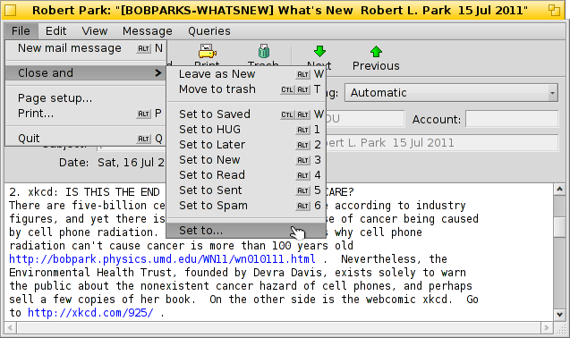

Русский
Русский Català
Català Deutsch
Deutsch English
English Español
Español Français
Français Italiano
Italiano Magyar
Magyar Polski
Polski Português
Português Português (Brazil)
Português (Brazil) Română
Română Slovenčina
Slovenčina Suomi
Suomi Svenska
Svenska 中文 ［中文］
中文 ［中文］ Українська
Українська 日本語
日本語| Содержание |
|
Haiku's mail system Using custom statuses Using queries More tips |
Workshop: Managing Email
This workshop takes a look on how to manage email under Haiku. It assumes that the email services are correctly configured with the E-Mail preferences and you're familiar with the basic features of the Mail application.
 Haiku's mail system
Haiku's mail system
If you come to Haiku from other operating systems, you're probably used to big applications like MS Outlook or Mozilla's Thunderbird. You have to configure them by entering all the info on mail server addresses etc. and they use their own contacts database. They take care of sending and fetching email and store them in some big special file.
Changing you email client can be a hassle with quite some ex/importing and converting going on. Using more than one client in parallel to check out what else is available is also not without the occasional kerfuffle.
Haiku's mail system is different. It breaks down into smaller separate modules.
There's the mail_daemon that takes care of the communication with your mail servers. The E-Mail preferences is the one central point to configure your email accounts and how often they're checked, for example.
Every message that is fetched or sent is saved as one single email file, with its header information (like sender, subject, date) and status (like New, Replied, Sent) in BFS attributes. This enables searching/filtering them with Haiku's fast queries.

With every email being in a separate file, viewing them becomes just as easy as browsing through a folder (or query result) of images with ShowImage. Leaving the Tracker window open, you'll see the moving selection of the currently viewed file while you use the previous/next button to move through them.
As they are independent files, using a viewer other than Haiku's Mail causes no problems whatsoever.
Similarly, creating a new message results in just another file that is handed to the mail_daemon that takes care of sending it off. Contact management is deferred to the People application.
In a nutshell, where other mail clients do everything, from communicating with the mail servers to providing a view with all your mails and tools to search and filter them, Haiku uses a chain of smaller tools and general file management:
The mail_daemon to fetch/send mail and save them as normal files.
Tracker windows and queries to find and show email files.
The Mail application to view email files and create new messages relying on system-wide contact management by the People app.
Especially using Tracker and queries to manage emails is a powerful idea. The experience you gain can be transferred to any other problem that is dealing with files. Be it images, music, video, contacts or any other documents, using Tracker is at the core of all file managing.
Also, improvements in any of these system areas benefit not just emailing, but all applications that make use of them.
Using custom statuses
When you browse through your newly arrived email, you may want to come back to some of them later to think about it in more depth. While you could use Mail's menu to keep them in your "New messages" query, things tend to pile up that way...
One solution is of course to just start a reply and save it as draft. But if you don't expect to write a reply and just want to re-read the mail later, that isn't ideal.
Better use to create a new status and use that to categorize your mail. For example, you could call the status "Later", and then query for that when you find more time.
Or you use different statuses for specific projects. For example, I created a status "HUG" (for "Haiku user guide") under which I collect every mail that may influence the contents of the user guide, like commit messages about code changes that alter or introduce some feature or anything else I feel could improve the user guide.
In any case, try to keep the status name short. That way it always fits in a normally wide "Status" column in Tracker.
You don't have to open an email with the Mail application to set its status. With the Tracker add-ons Mark as Read and Mark as... you can select some email files and set their status in one go.
Using queries
Sure, you specify a folder to store all your email, you can open it et voilà, there's all you mail. But over time the folder becomes crowded and showing all will take longer and longer as thousands of files and their attributes have to be parsed and sorted. Also, most of the time you don't really care about two year old emails of Nigerian princes and their inheritory trouble ...
Queries, to the rescue!
By using queries, you can narrow down the view of your mails. Actually, the mailbox icon in the Deskbar uses queries.

The submenu does a query for the status "Draft", which is set by Mail when you save a message.
and are just links to regular folders (and not very useful in my opinion).
The submenu is populated by a query for email with the status "New" (that same query is used to change the mailbox icon to show some letters in it, by the way).
You can add your own queries (or folders, applications, scripts etc.) to that context menu too, by putting them or links to them into ~/config/settings/Mail/Menu Links.
Query examples
Here are a few examples of useful queries:
 This finds all mails with the custom status "Later". |
 This finds all mails of the past 2 days. |
 This finds all mails by Ingo Weinhold of the past 2 weeks. |
 This finds all posts from the Haiku commit list of the past 12 hours. |
More tips
If you don't save a query as "Query" but as "Query template", invoking it won't show the result window, but the Find... window instead. That way you can easily exchange the search string for the subject or sender, for example, or change a "2 days" time limit to "3 days".
Activating "type-ahead filtering" in Tracker's preferences allows you to very quickly filter a query result even further. Often it's enough to query for all mails of the last 3 days and go with type-ahead filtering from there. The big advantage is, that you don't have to exactly specify which attribute to search for, as all displayed are considered when filtering.